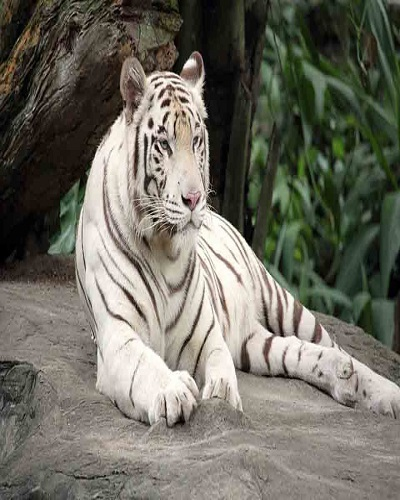

Timings of Akshardham Temple are from 9.30 AM to 6.30 PM. Mandir Aarti timings are from 10 AM and 6 PM.Best time to visit is between July to OctoberRead More
Akshardham Temple
Birla Mandir
Best time to visit the Birla temple is during Janmashtami, Diwali and Ram Navmi. One can see elaborate decorations in the temple during the festive times.Read More
Birla Mandir
Chandni Chowk
Most of the shops open by 10 am. So any time after that is good to visit it. You can try at around 4 pm.Read More
Chandni Chowk
Indian Gate
The monument is open all day on all days of the week. However, the best time to visit India Gate is between 07:00 PM and 09:30 PM.Read More
Indian Gate
Rashtrapati Bhavan
Visiting days of Rashtrapati Bhavan Gardens (Circuit No. 3) are Friday, Saturday and Sunday only during the months from August to March.Read More
Rashtrapati Bhavan
Jama Masjid
Best time to visit the mosque is before 12 o'clock at noon and between 2:00 PM to 4:00 PM. The most important prayer is held right before sunset between 4:30 PM to 5:30 PMRead More
Jama Masjid
Qutub Minar
Qutub Minar remains open on all days of the week, and the visiting timings are from 7:00 am to 5:00 pm. The best time to visit this monument is during the winter seasonRead More
It normally opens at 6 AM in the morning and closes at 6 PM in the evening depends on the sunset time. 30 minutes to 45 minutes are sufficient to visit the entire Jantar Mantar complex.Read More
Jantar Mantar
Humayun's Tomb
Best time to visit are between October to March.Read More
Humayun's Tomb
Lotus Temple
Lotus Temple is an ideal one to visit during the winter and spring time of October to MarchRead More
Lotus Temple
National Museum
Tour Timings: 7:15 am to 5:00 pm.Evenings are the best time to visit in summer as the weather is pleasant and the entire park lights up.In winter, you can visit the park any time between 11:00 AM and 11:00 PMRead More
National Museum

Zoo
Open Time Timings of Delhi Zoo are 9.00 AM to 4.30 PM from 1st April to 15th October (Summer) and 9.30 AM to 4 PM from 16th October to 31st March (winter).Read More
Zoo
Rail Museum
Rail MuseumNormal day's Rail Museum Delhi timing is open 10.00 am to 5.00 pm. The best month to visit is from August to November as the weather is cool and pleasant.Read More